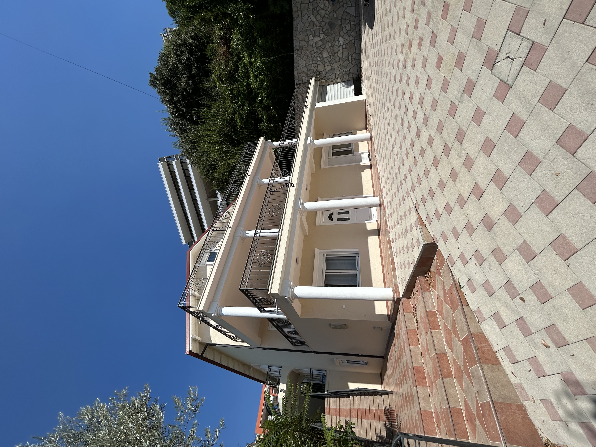
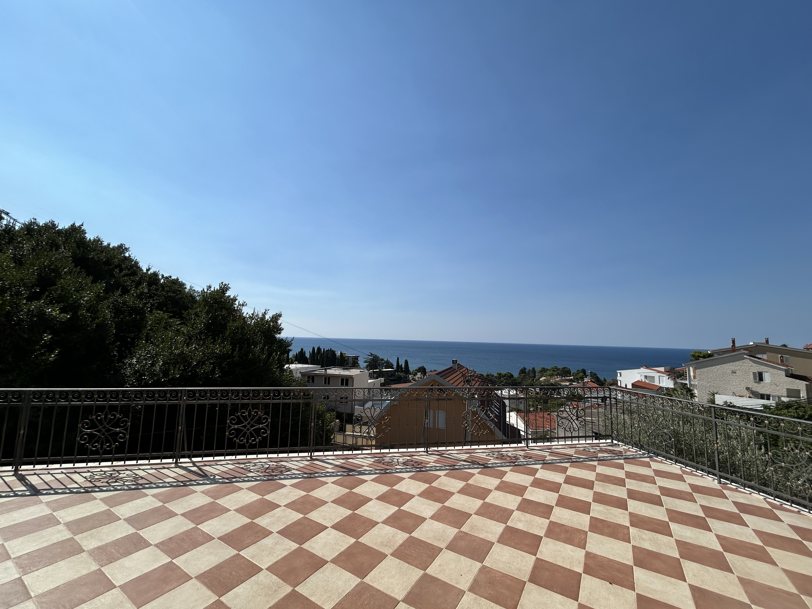
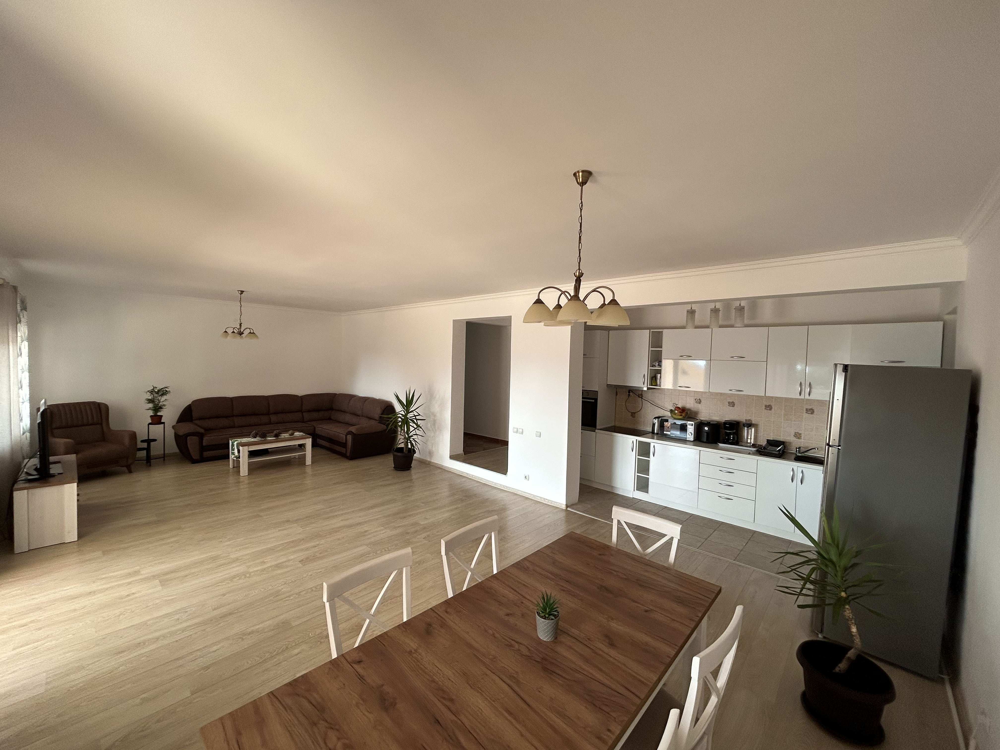
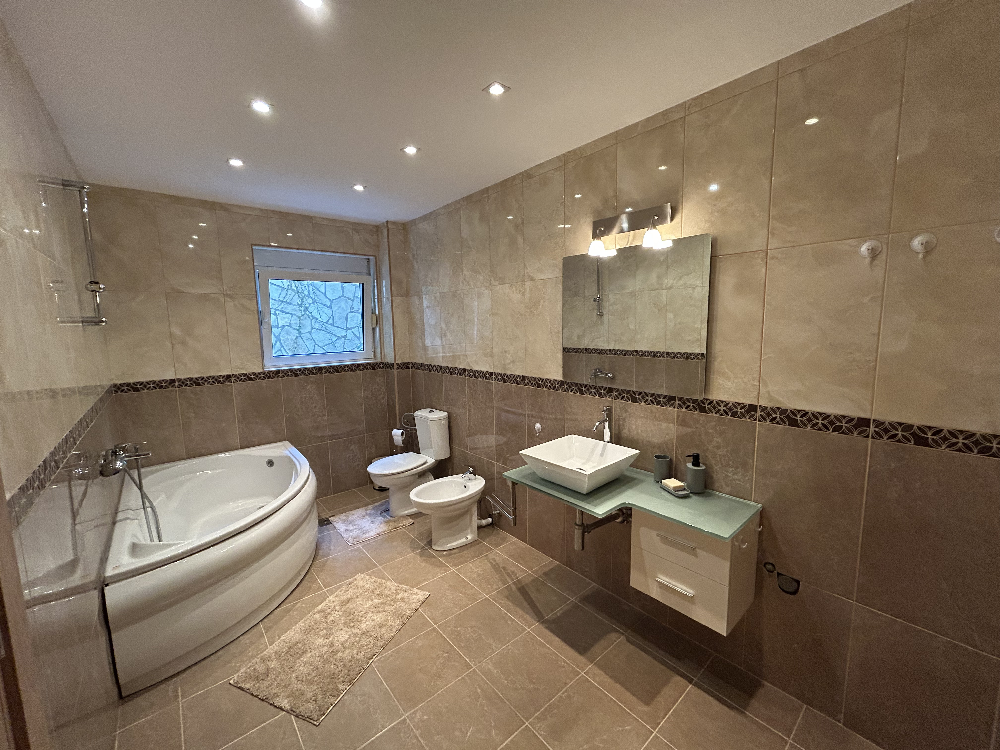
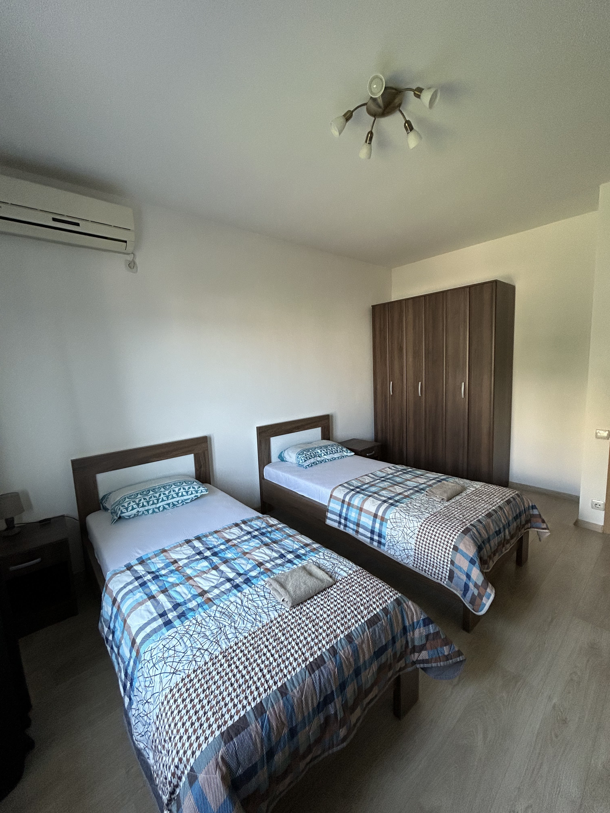
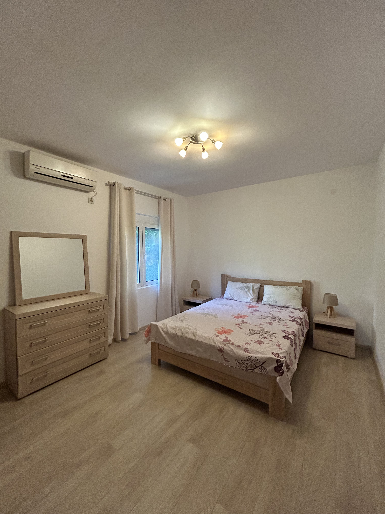
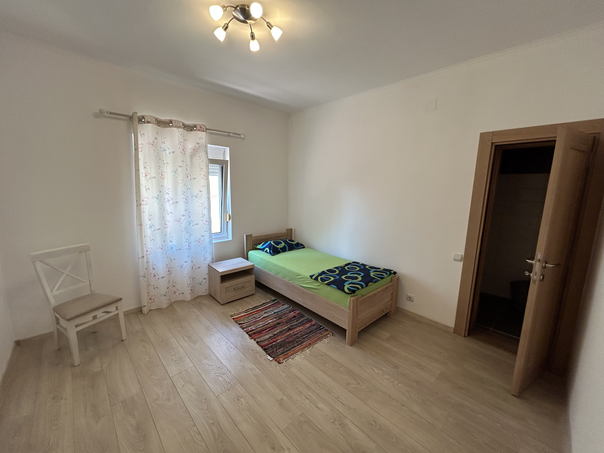
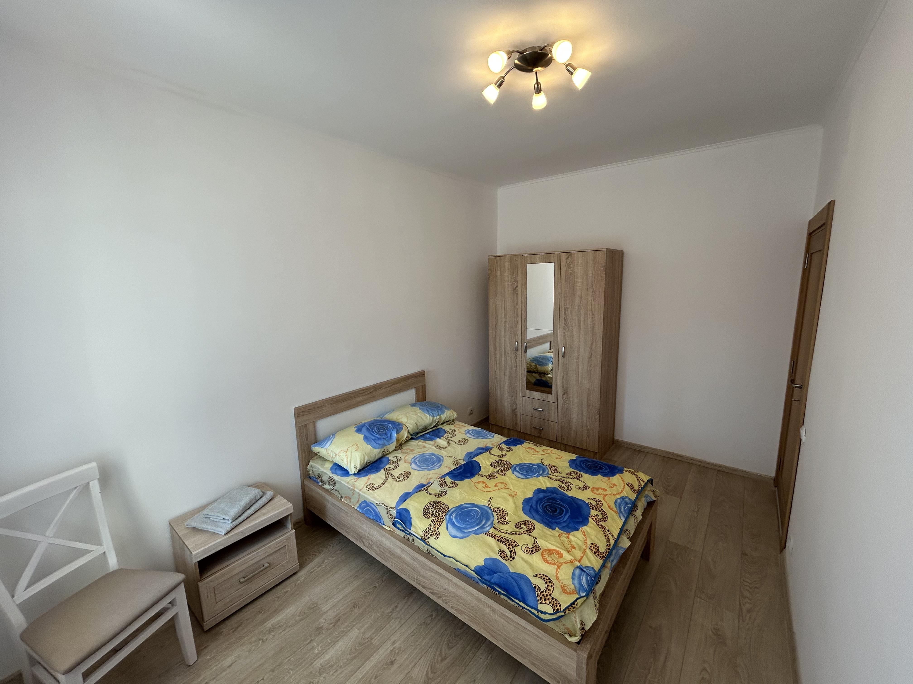
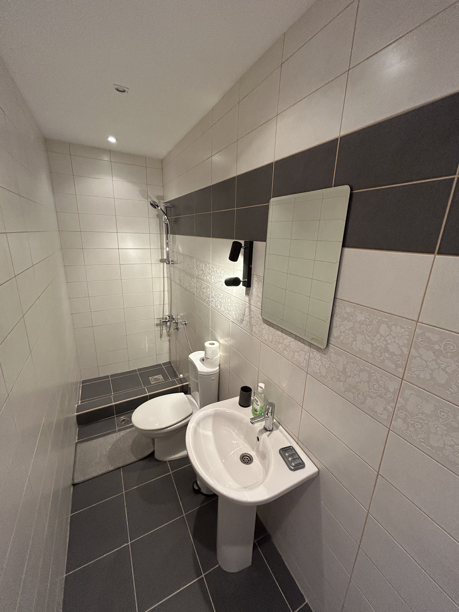
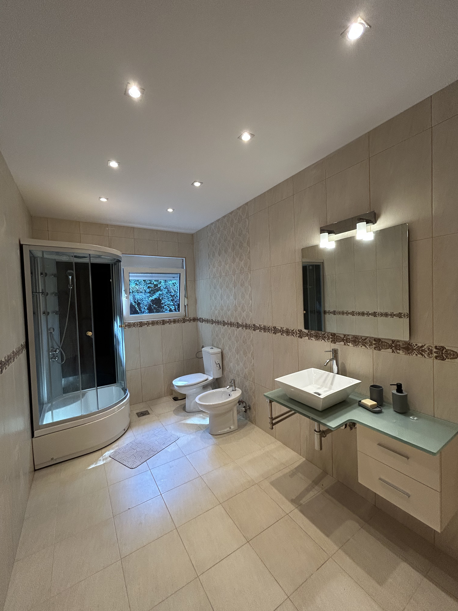

Prostrana rezidencija u mirnom dijelu Ulcinja sa ograđenim placem, garažom, parkingom za 3 automobila, baštom i prostorom za bazen.
Просторная резиденция в живописной части Ульциня с приватной огороженной территорией, гаражом, паркингом на 3 автомобиля, садом и зоной под бассейн.
Spacious residence in a prime area of Ulcinj featuring a private fenced territory, garage, parking for 3 cars, garden, and a designated pool plot.
Kliknite na bilo koju fotografiju za pregled u punoj veličini ili otvorite kompletnu arhivu fotografija na Google Disku:
Нажмите на любую фотографию для просмотра в полном размере или откройте полный архив на Google Диске:
Click on any photograph to view in full resolution or open the complete photo archive on Google Drive:










Zaseban i nezavisan apartman sa spoljnim ulazom. Odlično rješenje za goste ili dugoročni/kratkoročni najam.
Изолированный автономный апартамент с собственным входом снаружи. Идеальное решение для гостей или сдачи в аренду.
Self-contained autonomous apartment with a private exterior entrance. Ideal for guests or rental income.
Glavni stambeni nivo povezan unutrašnjim stepeništem sa trećim spratom, sa mogućnošću zasebnog ulaza.
Основной жилой уровень виллы. Соединен внутренней лестницей с третьим этажом, а также имеет независимый вход.
Main residential level connected internally to the third floor, complete with an optional separate exterior entrance.
Gornji nivo sa impresivnim i neometanim pogledom na otvoreno more.
Верхний видовой уровень с потрясающими панорамными видами на морское побережье.
Top panoramic level delivering magnificent unobstructed views across the Adriatic coastline.
Pozicija: Miran i istorijski dio Ulcinja smješten neposredno iznad Starog Grada.
Расположение: Престижный и тихий исторический район Ульциня прямо над Старым Городом (Stari Grad).
Area: Prestigious and scenic residential zone situated directly above historic Old Town Ulcinj (Stari Grad).